Inicio · Barcos en venta · Beneteau Monte Carlo 27
Beneteau Monte Carlo 27
64.900 €
Plata Marine gestiona el contacto y la operación como intermediario. Antes de reservar recibirás la identidad y condición del vendedor y el desglose de precio, impuestos y gastos de titularidad aplicables. No cobramos honorarios de comprador en barcos de nuestra cartera.
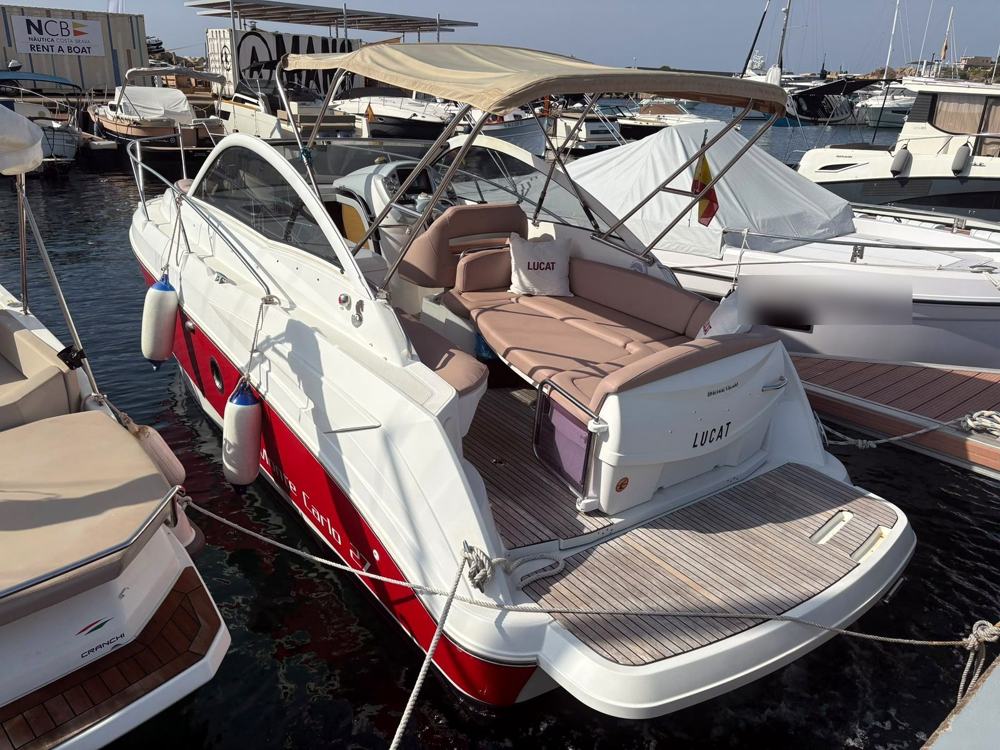
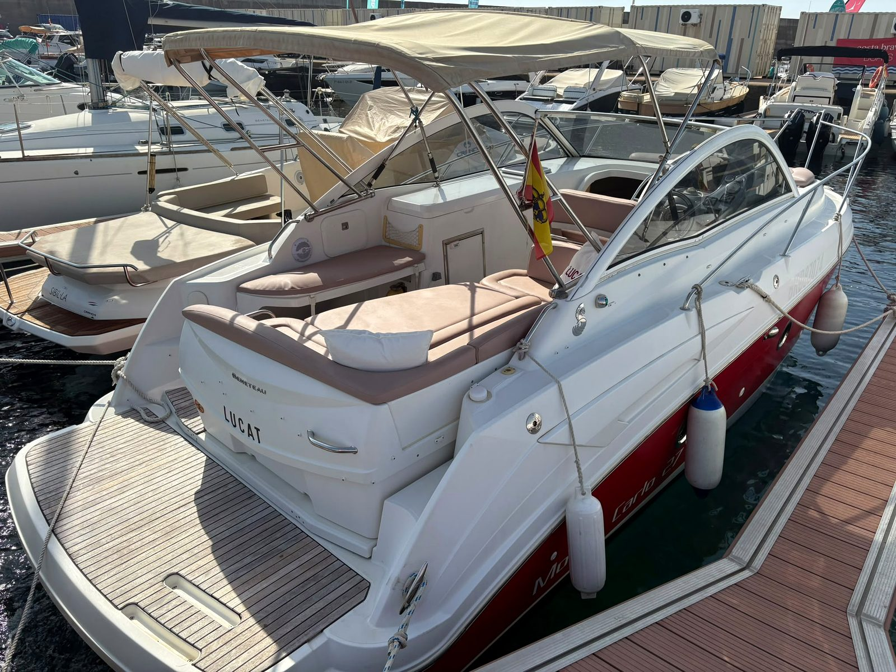
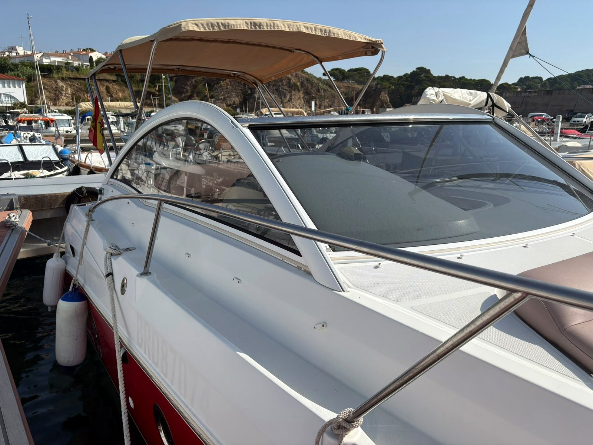
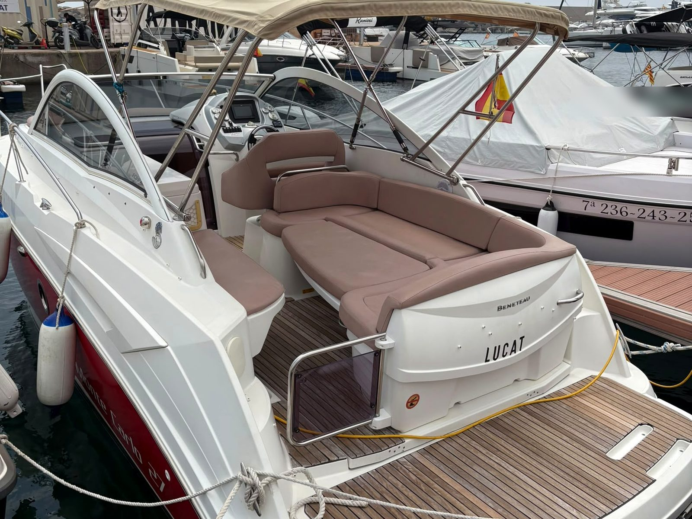
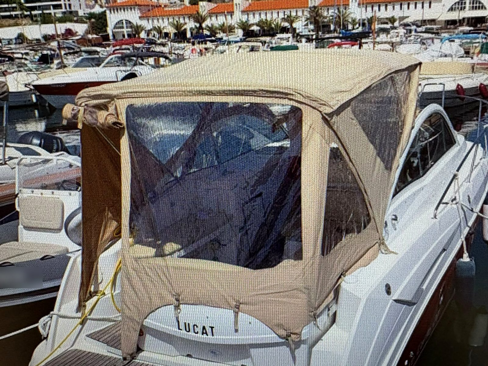
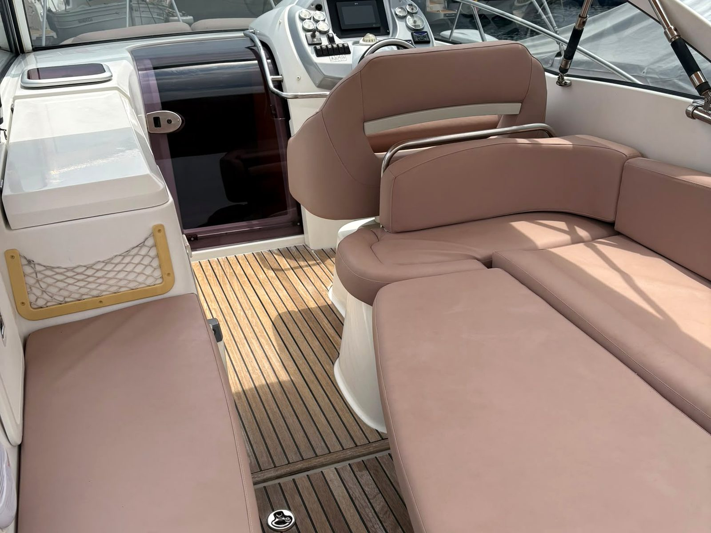
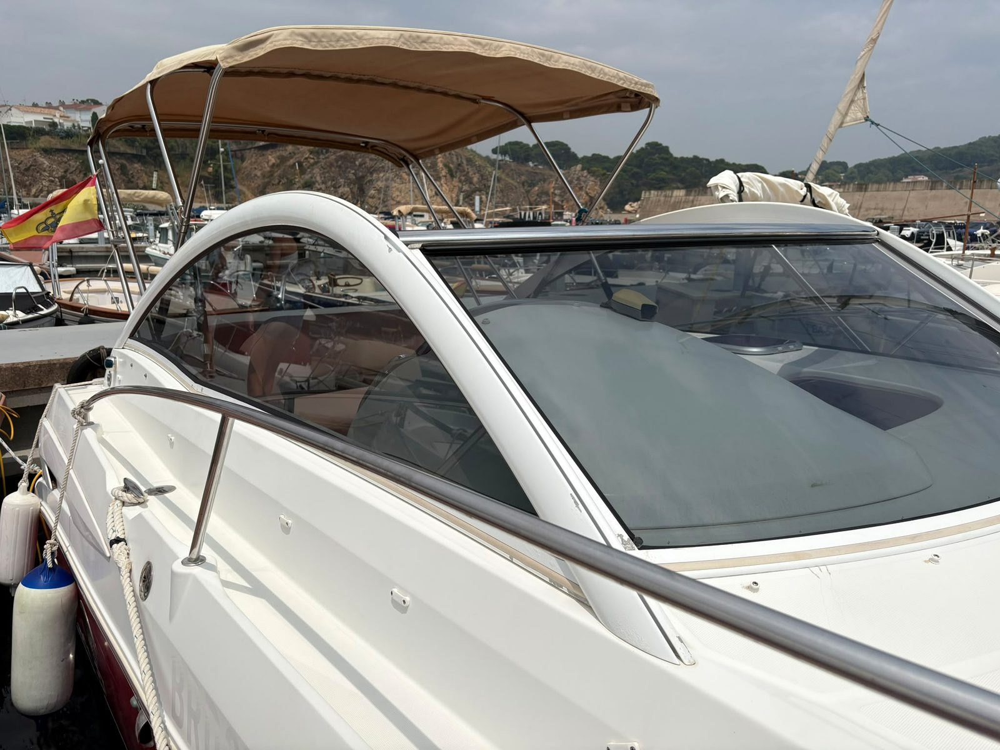
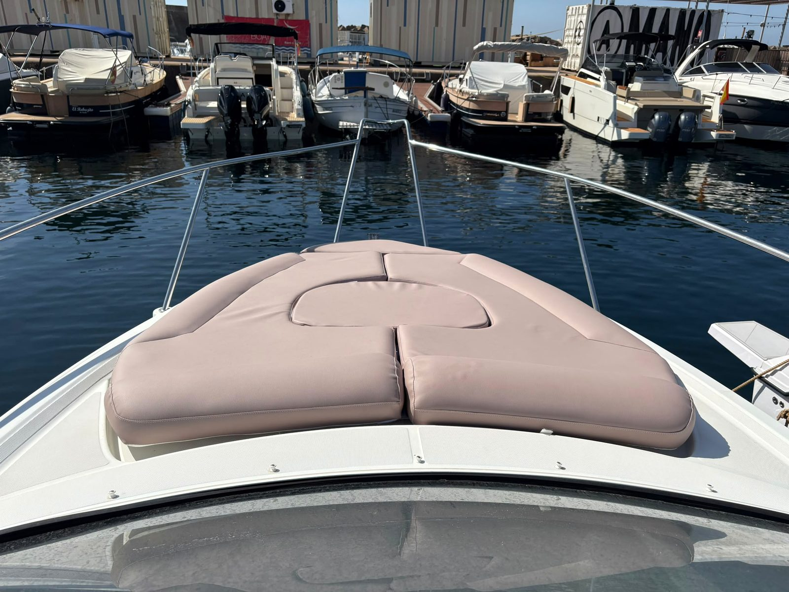
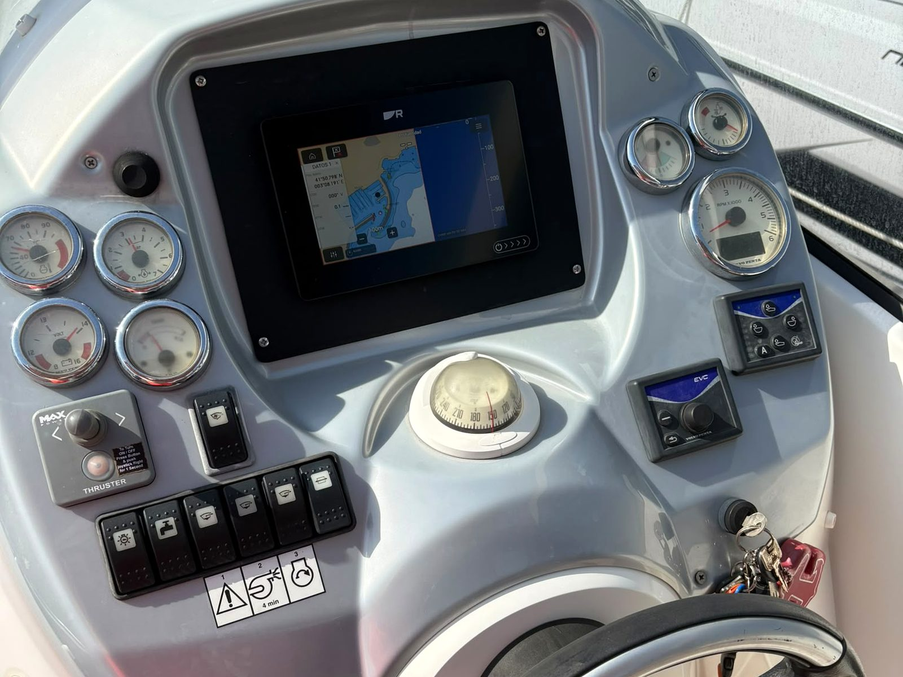
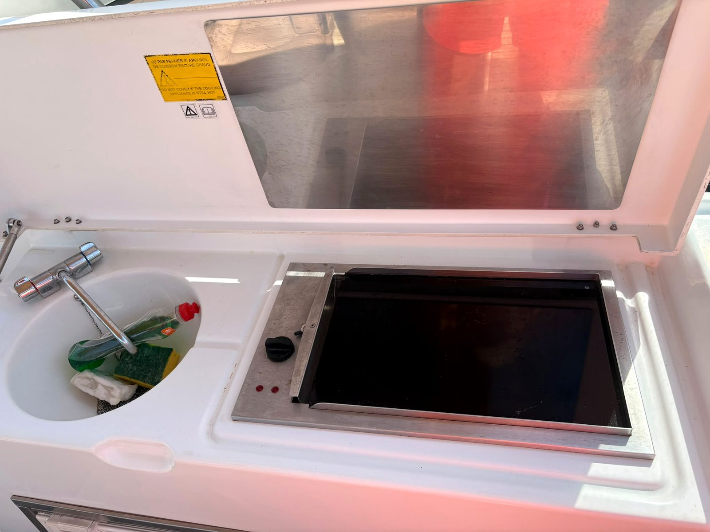
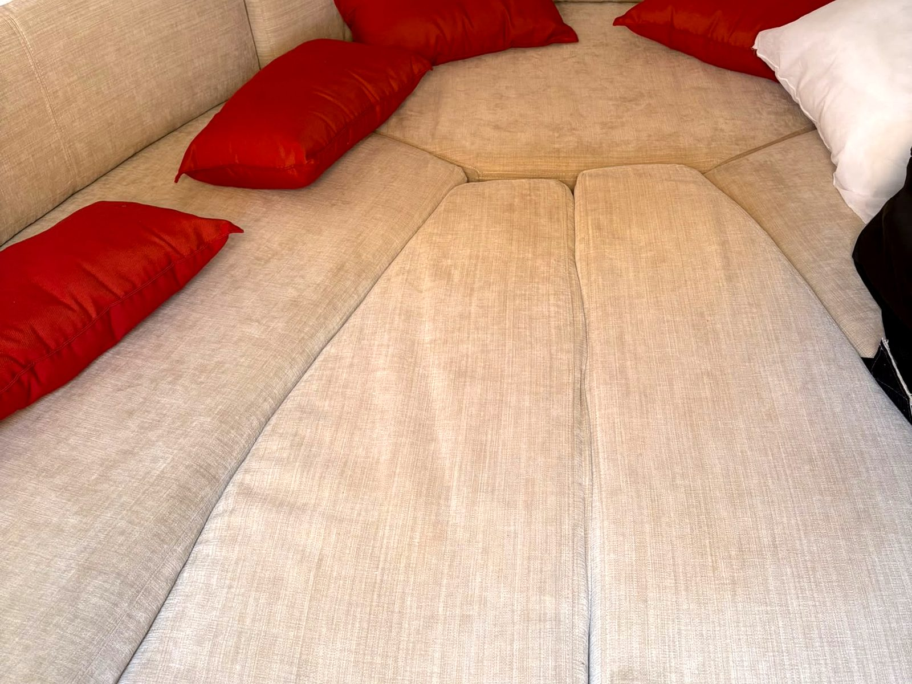
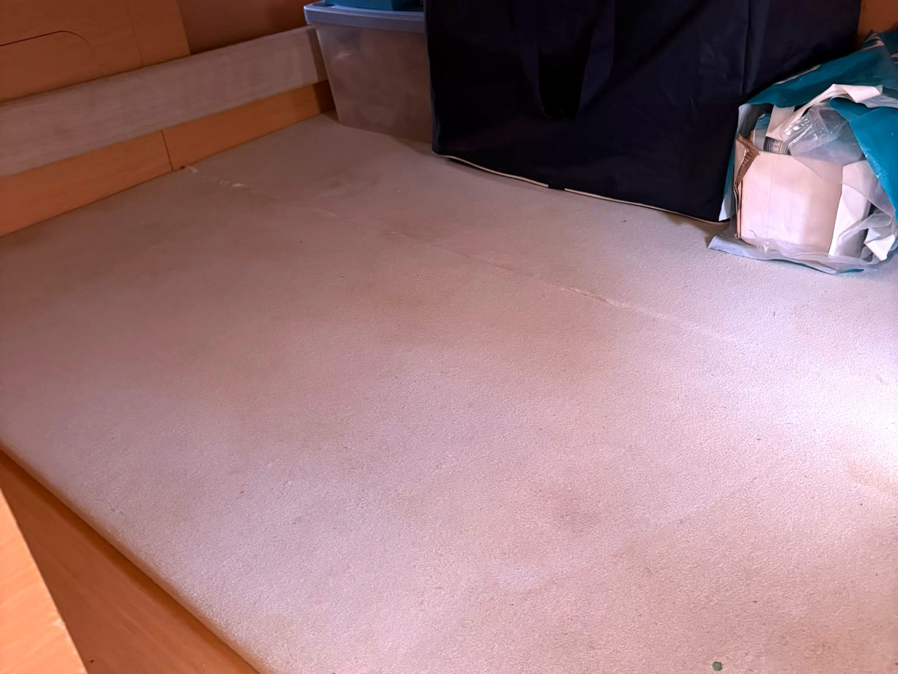
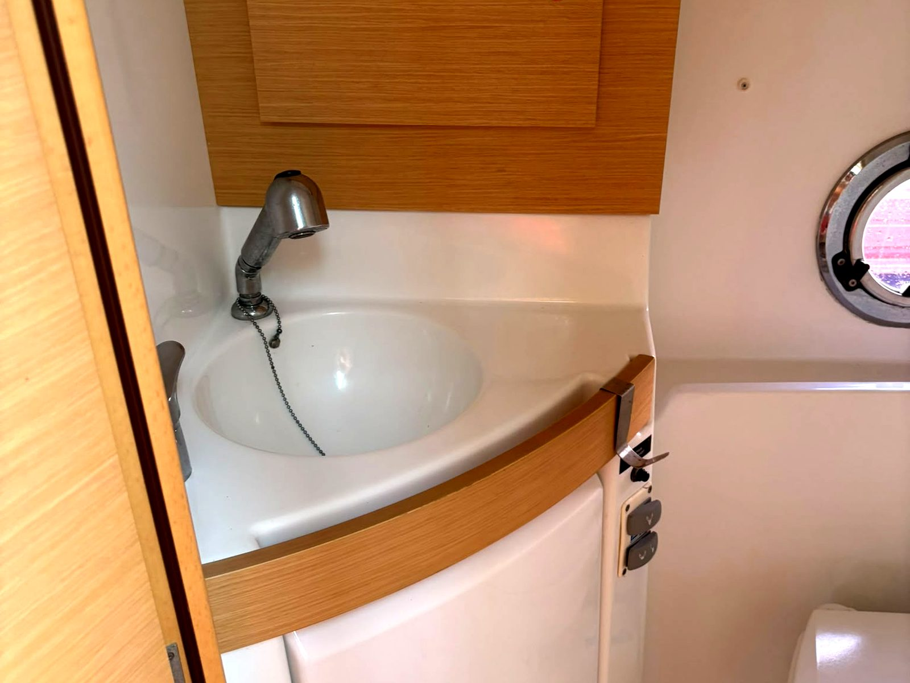
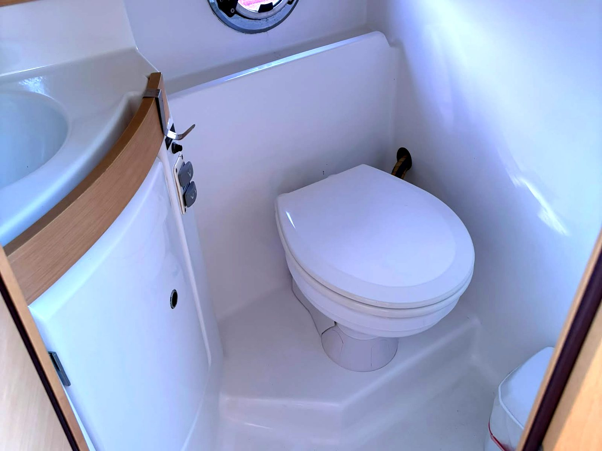
- Año
- 2008
- Eslora
- 7,98 m
- Manga
- 2,75 m
- Motor
- Volvo Penta 5.7 GXi, 350 cv, gasolina, cola DPS
- Horas
- Aprox. 650
- Casco
- Fibra de poliéster
- Camarotes
- 2 camarotes (proa convertible y popa) · baño con agua caliente
- Plazas
- 4 para dormir a bordo
- Depósitos
- 280 l de combustible · 95 l de agua
- Prestaciones
- Aprox. 20 nudos de crucero · 27 de máxima
- Ubicación
- Costa Brava (en seco)
- Bandera
- Española, a nombre de particular
- Electrónica
- Sonda Raymarine Axiom 7 nueva con transductor de popa
Cómo lo veo
Una Beneteau Monte Carlo 27 de 2008: un open con cabina, de líneas deportivas y casco rojo, con mucha bañera para su eslora. Está pensada para salir a pasar el día y dormir a bordo alguna noche con comodidad. Tiene dos camarotes (el de proa es convertible), baño con agua caliente y cocina.
Lleva un Volvo Penta 5.7 GXi de 350 CV de gasolina con cola DPS y unas 650 horas. El propietario indica unos 20 nudos de crucero y 27 de máxima. Tiene hélice de proa y facturas de mantenimiento desde 2022.
La sonda Raymarine Axiom 7 es nueva, con transductor de popa. También son nuevos el equipo de música y los altavoces, y los cojines están renovados. Tiene cocina de 220 V, nevera de 12 V, bimini, toldo camper y funda de invierno.
Lo que conviene saber: la hélice de proa tiene la chaveta rota (reparación pendiente, estimada en unos 150 €) y el congelador interior de la nevera no se puede usar: se rompió la tapa y se queda congelado sin poder abrirse. Por lo demás, tiene las marcas de uso normales de un barco de 18 años.
El precio son 64.900 €. Está en seco en la Costa Brava, con bandera española y a nombre de particular. Se puede visitar con cita previa, avisando con antelación.
Equipamiento: hélice de proa, sonda Raymarine Axiom 7 nueva con transductor de popa, equipo de música y altavoces nuevos, cojines renovados, cocina 220 V, nevera 12 V, baño con agua caliente, bimini, toldo camper, funda de invierno, cargador de baterías, pistones del trim recién cambiados, patente (antifouling) recién hecha, facturas de mantenimiento desde 2022.